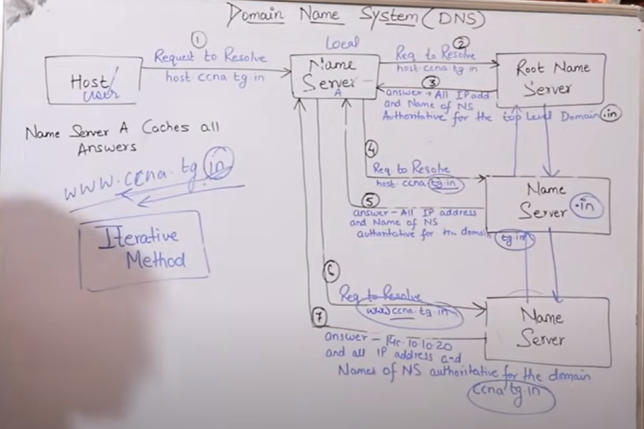
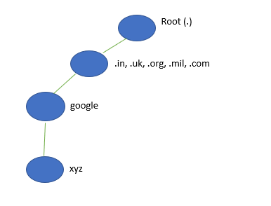

-> DNS is a host name to IP address translation service and oppsoite is also possible (IP address to hostname translation). -> It is an Application Layer Protocol. -> Previously, all the host names were saved in the host.txt file. -> 6 top level domains included - .com, .org, .biz, .mil, .net and .edu -> Forward and reverse DNS lookups. -> Highly targeted for hacking purpose. -> It uses TCP port 53 and UDP port 53. -> Today, DNS support 13 root name server (A to M). Check www.root-servers.org website for more information. -> Think the DNS server as contact book in your phone. You don't remember number, you remember only name and you call. -> Same goes to typing www.google.com or www.facebook.com, you type and DNS server resolve it to IP address and give it to you, so that you can reach to facebook or google server. Note: There are two ways to resolve hostname to IP address. The first is by building a host table on each router, and the second is to build a DNS server.Three types of Domain
1. Generic (.com, .edu, .org, .mil) 2. Country (.us, .uk, .in) 3. Inverse (IP to domain Name mapping) -> A namespace map each address to a unique name. (Way of defining a name to a domain) -> Namespace is of two types - Flat, Hierarchical -> Flat namespace - - In this method, name is assigned to an address. - It is in sequence of character without any structure. - It can't be used in larger system. - eg: RahulAdminxyz, RameshITxyz, RiaMktxyz -> Hierarchical Namespace - In this, name is made of several paths. - In this method, name space can be decentralized. - eg: Rahul.Admin.xyz, Ramesh.IT.xyz, Ria.Mkt.xyz -> There are two ways to resolve Domain Name Recursive, Iterative to find the IP address.Hierarchy of Name Servers
Root Name Sever -> It is contacted by Name servers that cannot resolve the name. -> It contacts top level servers if name mapping is not known. -> It then gets the mapping and return the IP address to the host. Top Level Server -> It is responsible for .com, .org, .edu and all top level country domain like uk, fr, ca, in etc. -> They have information about Authoritative Domain Servers and know the IP addresses of each Authoritative Name server for the second level domains. Authoritative Server -> It can be maintained by organization or service provider. -> In order to reach ccna.tg.in we have to ask the root DNS server, then it will print out to the top level domain server and then to authoritative domain name server which actually contains the IP address. -> So, the Authoritative Server will return the associative IP address.  Fully Qualified Domain Name -> In this a label is terminated by Null string. (eg - xyz.google.com.) -> It contains full name of a host. Partially Qualified Domain Name -> In this a label is not terminated by null string. (eg - xyz.google.com) -> PQDN start from node but does not reach root. 